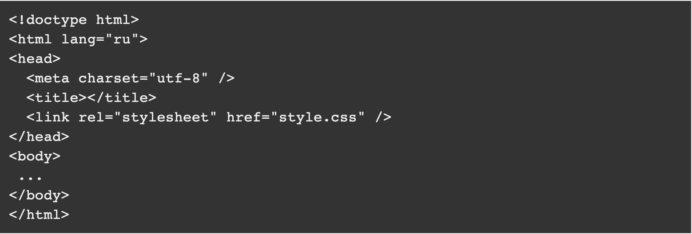

Новый стандарт принес много послаблений верстальщикам. В частности, использование элементов HTML, HEAD и BODY уже не является обязательным для разметки HTML5. Если их нет, то браузер все равно считает, что они существуют. По сути из обязательных в HTML5 остался только <!doctype html>
Это будет, пожалуй, самая короткая статья на моем блоге.
Если вы создаете шаблон с нуля, то надо от чего-то отталкиваться. Учитывая, что стандарт HTML5 «широко шагает по стране», я в этой статье приведу пример пустого шаблона HTML5.
В новом стандарте многое упростилось и теперь базовая часть выглядит так:
Новые теги HTML5
В HTML5 для структуры кода введено несколько новых тегов:<article>,<aside>, <footer>, <header>, <nav>, которые заменяют в некоторых случаях
привычный <div> Сделано это для поисковых роботов, чтобы они лучше распознавали код страниц и отделяли основной контент от
вспомогательных элементов.
С использованием новых тегов пустой шаблон HTML5 может выглядеть так:
Упрощение написания DOCTYPE
Вспомним как было раньше, в HTML4 тег DOCTYPE выглядел так:
Теперь же запись минимальна, проще, наверное, некуда :

Похожие упрощения произошли и с остальными тегами, так что переход на стандарт HTML5 существенно облегчает написание.
Необязательные теги в HTML5
Трактовка русского языка как основного языка HTML документа
Тег <html lang=»ru»> определяет язык документа. В сети регулярно возникают дискуссии о правильном его написании, в частности правильность написания «ru-RU». Я склоняюсь к варианту, что «-RU» является избыточным, так как у русского языка нет диалектов и вариантов написания как у Английского языка (Британский и Американский). Суффикс RU уточняет, где говорят на русском языке. То есть если en-US означает «английский язык на котором говорят в США», то ru-RU означает «русский язык на котором говорят в России», что является излишним.
В прочем, ничего страшного не случится, если вы и дальше будете использовать вариант «ru-RU».
Как поставить знак ударения в HTML
Знак ударения — это всего лишь один символ, которого порой так не хватает на клавиатуре. В этой статье я расскажу как использовать этот символ, когда вам нужно поставить знак ударения в слове. В HTML, чтобы использовать знак ударения необходимо набрать ́ после буквы, на которой должен стоять знак ударения.
Как добавить символ ударения в WordPress
Если вы используете WordPress, то знак ударения можно добавить в качестве дополнительной кнопки на панель в HTML редакторе.
Для этого добавьте следующий код в файл functions.php вашей темы WordPress.
После этого в редакторе появится необходима кнопка.
Теперь код знака ударения в HTML не придется вспоминать или искать в интернете.
Литература
При написании статьи были использованы следующие источники: